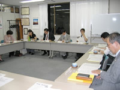

【日 時】
10月３日（水）17:45～19:45
【場 所】
埼玉県生協連 会議室
【参加者】
13人（なくす会理事５人、弁護士３人、消費生活相談員３人、事務局２人）

１．
適格消費者団体認定に向けて
（１）
この間の動きとして、９月の活動委員会と理事 会の報告、業務規程の整備の状況、個人正会員が100人に達したこと、埼玉県ＮＰＯ基金と消費者機構日本への登録、およびホームページを開設準備中であることを報告しました。
（２）
全国の団体の状況について、消費者機構日本と消費者支援機構関西が適格消費者団体に認定されたことなど報告しました。
２．チェックリストを活用した取り組みについて
（１）
賃貸住宅退去時の原状回復義務について
A.
「埼玉県の案件」
これまでの経過と考えられる問題点について事務局より説明し、問い合わせ（案）について意見交換
B.
「所沢市の案件」
これまでの経過と考えられる問題点について事務局より説明し、問い合わせ（案）について意見交換
C.
「和光市の案件」
次回までに契約書を再チェックし、今後の取り扱いについて検討を行うことになりました。
（２）
「ダイエット食品」について
これまでの経過と現在の状況に基づいて今後の取り扱いについて協議し、継続的に状況を見守ることを確認しました。
（３）
「低アルコール飲料」について
これまでの経過報告と、問い合わせについての事業者からの回答について意見交換しました。事業者側での今後の審議について報告いただきたい旨のお願いを回答へのお礼とともに送付することになりました。
（４）
「使い捨てコンタクトレンズ」について
これまでの経過報告と、問い合わせについての業者からの回答に基づいて意見交換。情報を収集した上で再度の問い合わせについて検討を行うことを確認しました。
３．その他
情報収集活動についてテーマをしぼった形でのアンケートを行うことを報告しました。
消費者被害をなくす会トップ